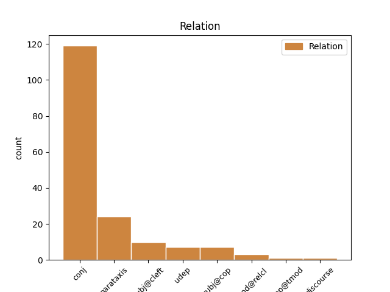
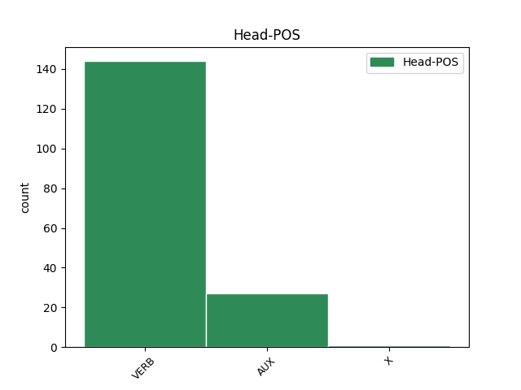
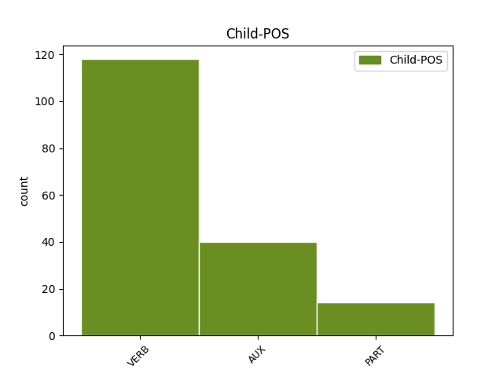

Distribution of features within this leaf



Agreement Rules sorted by frequency.
- When the dependent token is the conjunct(conj) of the head token, and the head token is VERB and the dependent token is VERB.
1 Tá bí VERB PresInd Mood=Ind|Tense=Pres 0 _ _ _
2 318,000 _ _ _ _ 0 _ _ _
3 de _ _ _ _ 0 _ _ _
4 bhaill _ _ _ _ 0 _ _ _
5 ag _ _ _ _ 0 _ _ _
6 Eaglais _ _ _ _ 0 _ _ _
7 Phreispitéireach _ _ _ _ 0 _ _ _
8 na _ _ _ _ 0 _ _ _
9 hÉireann _ _ _ _ 0 _ _ _
10 agus _ _ _ _ 0 _ _ _
11 friothálann friotháil VERB VTI Mood=Ind|Tense=Pres 1 conj _ _
12 ar _ _ _ _ 0 _ _ _
13 an _ _ _ _ 0 _ _ _
14 oileán _ _ _ _ 0 _ _ _
15 go _ _ _ _ 0 _ _ _
16 léir _ _ _ _ 0 _ _ _
17 . _ _ _ _ 0 _ _ _
1 D' _ _ _ _ 0 _ _ _
2 fhan fan VERB VI Form=Len|Mood=Ind|Tense=Past 0 _ _ _
3 an _ _ _ _ 0 _ _ _
4 saibhreas _ _ _ _ 0 _ _ _
5 ag _ _ _ _ 0 _ _ _
6 an _ _ _ _ 0 _ _ _
7 leanbh _ _ _ _ 0 _ _ _
8 , _ _ _ _ 0 _ _ _
9 agus _ _ _ _ 0 _ _ _
10 b' is AUX Cop Form=VF|Tense=Past|VerbForm=Cop 2 conj _ SpaceAfter=No
11 éigean _ _ _ _ 0 _ _ _
12 dá _ _ _ _ 0 _ _ _
13 huncail _ _ _ _ 0 _ _ _
14 , _ _ _ _ 0 _ _ _
15 don _ _ _ _ 0 _ _ _
16 sagart _ _ _ _ 0 _ _ _
17 , _ _ _ _ 0 _ _ _
18 a _ _ _ _ 0 _ _ _
19 cúram _ _ _ _ 0 _ _ _
20 a _ _ _ _ 0 _ _ _
21 ghlacadh _ _ _ _ 0 _ _ _
22 air _ _ _ _ 0 _ _ _
23 féin _ _ _ _ 0 _ _ _
24 . _ _ _ _ 0 _ _ _
1 dhá _ _ _ _ 0 _ _ _
2 chill _ _ _ _ 0 _ _ _
3 leictreacha _ _ _ _ 0 _ _ _
4 nó _ _ _ _ 0 _ _ _
5 níos _ _ _ _ 0 _ _ _
6 mó _ _ _ _ 0 _ _ _
7 a _ _ _ _ 0 _ _ _
8 tháirgeann _ _ _ _ 0 _ _ _
9 leictreachas _ _ _ _ 0 _ _ _
10 ; _ _ _ _ 0 _ _ _
11 tarlaíonn tarlaigh VERB VTI Mood=Ind|Tense=Pres 0 _ _ _
12 sé _ _ _ _ 0 _ _ _
13 seo _ _ _ _ 0 _ _ _
14 nuair _ _ _ _ 0 _ _ _
15 a _ _ _ _ 0 _ _ _
16 imoibríonn _ _ _ _ 0 _ _ _
17 na _ _ _ _ 0 _ _ _
18 ceimiceáin _ _ _ _ 0 _ _ _
19 laistigh _ _ _ _ 0 _ _ _
20 den _ _ _ _ 0 _ _ _
21 chadhnra _ _ _ _ 0 _ _ _
22 ar _ _ _ _ 0 _ _ _
23 a _ _ _ _ 0 _ _ _
24 chéile _ _ _ _ 0 _ _ _
25 ; _ _ _ _ 0 _ _ _
26 braitheann braith VERB VTI Mood=Ind|Tense=Pres 11 parataxis _ _
27 vóltas _ _ _ _ 0 _ _ _
28 cadhnra _ _ _ _ 0 _ _ _
29 ar _ _ _ _ 0 _ _ _
30 líon _ _ _ _ 0 _ _ _
31 na _ _ _ _ 0 _ _ _
32 gcill _ _ _ _ 0 _ _ _
33 a _ _ _ _ 0 _ _ _
34 bhíonn _ _ _ _ 0 _ _ _
35 ann _ _ _ _ 0 _ _ _
36 : _ _ _ _ 0 _ _ _
37 dá _ _ _ _ 0 _ _ _
38 mhéid _ _ _ _ 0 _ _ _
39 cill _ _ _ _ 0 _ _ _
40 is _ _ _ _ 0 _ _ _
41 ea _ _ _ _ 0 _ _ _
42 is _ _ _ _ 0 _ _ _
43 mó _ _ _ _ 0 _ _ _
44 an _ _ _ _ 0 _ _ _
45 vóltas _ _ _ _ 0 _ _ _
46 carbaihiodráití _ _ _ _ 0 _ _ _
47 . _ _ _ _ 0 _ _ _
1 Ní _ _ _ _ 0 _ _ _
2 raibh _ _ _ _ 0 _ _ _
3 i _ _ _ _ 0 _ _ _
4 bfhad _ _ _ _ 0 _ _ _
5 go _ _ _ _ 0 _ _ _
6 dtáinig _ _ _ _ 0 _ _ _
7 mé _ _ _ _ 0 _ _ _
8 a _ _ _ _ 0 _ _ _
9 fhad _ _ _ _ 0 _ _ _
10 le _ _ _ _ 0 _ _ _
11 tábhairne _ _ _ _ 0 _ _ _
12 ar _ _ _ _ 0 _ _ _
13 mo _ _ _ _ 0 _ _ _
14 dheis _ _ _ _ 0 _ _ _
15 ós _ _ _ _ 0 _ _ _
16 cionn _ _ _ _ 0 _ _ _
17 an _ _ _ _ 0 _ _ _
18 bhealaigh _ _ _ _ 0 _ _ _
19 The _ _ _ _ 0 _ _ _
20 Tight _ _ _ _ 0 _ _ _
21 Line _ _ _ _ 0 _ _ _
22 ar ar PART Vb PartType=Vb|PronType=Rel|Tense=Past 23 udep _ _
23 chuala clois VERB VTI Form=Len|Mood=Ind|Tense=Past 0 _ _ _
24 mé _ _ _ _ 0 _ _ _
25 na _ _ _ _ 0 _ _ _
26 hoibrithe _ _ _ _ 0 _ _ _
27 as _ _ _ _ 0 _ _ _
28 Tír _ _ _ _ 0 _ _ _
29 Chonaill _ _ _ _ 0 _ _ _
30 ag _ _ _ _ 0 _ _ _
31 caint _ _ _ _ 0 _ _ _
32 fá _ _ _ _ 0 _ _ _
33 dtaobh _ _ _ _ 0 _ _ _
34 de _ _ _ _ 0 _ _ _
35 . _ _ _ _ 0 _ _ _
1 Meandar _ _ _ _ 0 _ _ _
2 sula _ _ _ _ 0 _ _ _
3 dtuigim _ _ _ _ 0 _ _ _
4 nach is AUX Cop PronType=Rel|Tense=Pres|VerbForm=Cop 0 _ _ _
5 bloscadh _ _ _ _ 0 _ _ _
6 toirní _ _ _ _ 0 _ _ _
7 atá bí VERB PresInd Mood=Ind|PronType=Rel|Tense=Pres 4 subj@cleft _ _
8 ann _ _ _ _ 0 _ _ _
9 ach _ _ _ _ 0 _ _ _
10 pléascán _ _ _ _ 0 _ _ _
11 . _ _ _ _ 0 _ _ _
1 Deir _ _ _ _ 0 _ _ _
2 sí _ _ _ _ 0 _ _ _
3 gur is AUX Cop Tense=Past|VerbForm=Cop 0 _ _ _
4 de _ _ _ _ 0 _ _ _
5 bharr _ _ _ _ 0 _ _ _
6 ar _ _ _ _ 0 _ _ _
7 an _ _ _ _ 0 _ _ _
8 mhéadú _ _ _ _ 0 _ _ _
9 atá _ _ _ _ 0 _ _ _
10 tagtha _ _ _ _ 0 _ _ _
11 ar _ _ _ _ 0 _ _ _
12 líon _ _ _ _ 0 _ _ _
13 na _ _ _ _ 0 _ _ _
14 dteaghlach _ _ _ _ 0 _ _ _
15 Gaelach _ _ _ _ 0 _ _ _
16 , _ _ _ _ 0 _ _ _
17 agus _ _ _ _ 0 _ _ _
18 gur is AUX Cop Tense=Past|VerbForm=Cop 3 conj _ _
19 de _ _ _ _ 0 _ _ _
20 thoradh _ _ _ _ 0 _ _ _
21 ar _ _ _ _ 0 _ _ _
22 bhorradh _ _ _ _ 0 _ _ _
23 na _ _ _ _ 0 _ _ _
24 nGaelscolaíochta _ _ _ _ 0 _ _ _
25 i _ _ _ _ 0 _ _ _
26 gCúige _ _ _ _ 0 _ _ _
27 Mumhan _ _ _ _ 0 _ _ _
28 , _ _ _ _ 0 _ _ _
29 go _ _ _ _ 0 _ _ _
30 bhfuil _ _ _ _ 0 _ _ _
31 gá _ _ _ _ 0 _ _ _
32 anois _ _ _ _ 0 _ _ _
33 le _ _ _ _ 0 _ _ _
34 seirbhísí _ _ _ _ 0 _ _ _
35 oideachais _ _ _ _ 0 _ _ _
36 Montessori _ _ _ _ 0 _ _ _
37 . _ _ _ _ 0 _ _ _
1 Tá _ _ _ _ 0 _ _ _
2 an _ _ _ _ 0 _ _ _
3 báchrán _ _ _ _ 0 _ _ _
4 an-searbh _ _ _ _ 0 _ _ _
5 le _ _ _ _ 0 _ _ _
6 hól _ _ _ _ 0 _ _ _
7 .. _ _ _ _ 0 _ _ _
8 Tá bí VERB PresInd Mood=Ind|Tense=Pres 0 _ _ _
9 an _ _ _ _ 0 _ _ _
10 Chomhairle _ _ _ _ 0 _ _ _
11 seo _ _ _ _ 0 _ _ _
12 ar _ _ _ _ 0 _ _ _
13 cheann _ _ _ _ 0 _ _ _
14 de _ _ _ _ 0 _ _ _
15 na _ _ _ _ 0 _ _ _
16 naoi _ _ _ _ 0 _ _ _
17 gcomhpháirtí _ _ _ _ 0 _ _ _
18 NASC _ _ _ _ 0 _ _ _
19 - _ _ _ _ 0 _ _ _
20 is is AUX Cop Tense=Pres|VerbForm=Cop 8 parataxis _ _
21 iad _ _ _ _ 0 _ _ _
22 na _ _ _ _ 0 _ _ _
23 cinn _ _ _ _ 0 _ _ _
24 eile _ _ _ _ 0 _ _ _
25 ná _ _ _ _ 0 _ _ _
26 : _ _ _ _ 0 _ _ _
27 Comhairlí _ _ _ _ 0 _ _ _
28 Contae _ _ _ _ 0 _ _ _
29 Chorcaigh _ _ _ _ 0 _ _ _
30 , _ _ _ _ 0 _ _ _
31 Dhún _ _ _ _ 0 _ _ _
32 na _ _ _ _ 0 _ _ _
33 nGall _ _ _ _ 0 _ _ _
34 , _ _ _ _ 0 _ _ _
35 Mhaigh _ _ _ _ 0 _ _ _
36 Eo _ _ _ _ 0 _ _ _
37 agus _ _ _ _ 0 _ _ _
38 Chiarraí _ _ _ _ 0 _ _ _
39 , _ _ _ _ 0 _ _ _
40 Comhairle _ _ _ _ 0 _ _ _
41 Chathair _ _ _ _ 0 _ _ _
42 na _ _ _ _ 0 _ _ _
43 Gaillimhe _ _ _ _ 0 _ _ _
44 , _ _ _ _ 0 _ _ _
45 Ollscoil _ _ _ _ 0 _ _ _
46 na _ _ _ _ 0 _ _ _
47 hÉireann _ _ _ _ 0 _ _ _
48 i _ _ _ _ 0 _ _ _
49 nGaillimh _ _ _ _ 0 _ _ _
50 , _ _ _ _ 0 _ _ _
51 Údarás _ _ _ _ 0 _ _ _
52 na _ _ _ _ 0 _ _ _
53 Gaeltachta _ _ _ _ 0 _ _ _
54 agus _ _ _ _ 0 _ _ _
55 Údarás _ _ _ _ 0 _ _ _
56 Réigiúnach _ _ _ _ 0 _ _ _
57 an _ _ _ _ 0 _ _ _
58 Iarthair _ _ _ _ 0 _ _ _
59 . _ _ _ _ 0 _ _ _
1 Ar _ _ _ _ 0 _ _ _
2 fhianaise _ _ _ _ 0 _ _ _
3 i _ _ _ _ 0 _ _ _
4 dtuairisc _ _ _ _ 0 _ _ _
5 atá bí VERB PresInd Mood=Ind|PronType=Rel|Tense=Pres 11 mod@relcl _ _
6 foilsithe _ _ _ _ 0 _ _ _
7 ag _ _ _ _ 0 _ _ _
8 an _ _ _ _ 0 _ _ _
9 eagraíocht _ _ _ _ 0 _ _ _
10 UNICEF _ _ _ _ 0 _ _ _
11 tá bí VERB PresInd Mood=Ind|Tense=Pres 0 _ _ _
12 ' _ _ _ _ 0 _ _ _
13 tromlach _ _ _ _ 0 _ _ _
14 suntasach _ _ _ _ 0 _ _ _
15 ' _ _ _ _ 0 _ _ _
16 anois _ _ _ _ 0 _ _ _
17 ag _ _ _ _ 0 _ _ _
18 na _ _ _ _ 0 _ _ _
19 francaigh _ _ _ _ 0 _ _ _
20 i _ _ _ _ 0 _ _ _
21 scoileanna _ _ _ _ 0 _ _ _
22 lán-Ghaeilge _ _ _ _ 0 _ _ _
23 na _ _ _ _ 0 _ _ _
24 hÉireann _ _ _ _ 0 _ _ _
25 . _ _ _ _ 0 _ _ _
1 Láimhseáltar _ _ _ _ 0 _ _ _
2 an _ _ _ _ 0 _ _ _
3 ghné _ _ _ _ 0 _ _ _
4 seo _ _ _ _ 0 _ _ _
5 den _ _ _ _ 0 _ _ _
6 scéal _ _ _ _ 0 _ _ _
7 idir _ _ _ _ 0 _ _ _
8 an _ _ _ _ 0 _ _ _
9 bheirt _ _ _ _ 0 _ _ _
10 acu _ _ _ _ 0 _ _ _
11 le _ _ _ _ 0 _ _ _
12 teannas _ _ _ _ 0 _ _ _
13 tuisceanach _ _ _ _ 0 _ _ _
14 áirithe _ _ _ _ 0 _ _ _
15 ionas _ _ _ _ 0 _ _ _
16 gur is AUX Cop Tense=Pres|VerbForm=Cop 0 _ _ _
17 tuigthe _ _ _ _ 0 _ _ _
18 go _ _ _ _ 0 _ _ _
19 maith _ _ _ _ 0 _ _ _
20 dúinn _ _ _ _ 0 _ _ _
21 nach is AUX Cop Polarity=Neg|PronType=Rel|Tense=Pres|VerbForm=Cop 16 subj@cop _ _
22 aon _ _ _ _ 0 _ _ _
23 bhábóg _ _ _ _ 0 _ _ _
24 cheannéadrom _ _ _ _ 0 _ _ _
25 ná _ _ _ _ 0 _ _ _
26 ráistéir _ _ _ _ 0 _ _ _
27 ainnire _ _ _ _ 0 _ _ _
28 gan _ _ _ _ 0 _ _ _
29 fios _ _ _ _ 0 _ _ _
30 a _ _ _ _ 0 _ _ _
31 haigne _ _ _ _ 0 _ _ _
32 í _ _ _ _ 0 _ _ _
33 Eibhlín _ _ _ _ 0 _ _ _
34 agus _ _ _ _ 0 _ _ _
35 nach _ _ _ _ 0 _ _ _
36 aon _ _ _ _ 0 _ _ _
37 ridire _ _ _ _ 0 _ _ _
38 ar _ _ _ _ 0 _ _ _
39 a _ _ _ _ 0 _ _ _
40 chapall _ _ _ _ 0 _ _ _
41 bán _ _ _ _ 0 _ _ _
42 é _ _ _ _ 0 _ _ _
43 Murt _ _ _ _ 0 _ _ _
44 . _ _ _ _ 0 _ _ _
1 Tharla _ _ _ _ 0 _ _ _
2 céad _ _ _ _ 0 _ _ _
3 rud _ _ _ _ 0 _ _ _
4 eile _ _ _ _ 0 _ _ _
5 freisin _ _ _ _ 0 _ _ _
6 , _ _ _ _ 0 _ _ _
7 ach _ _ _ _ 0 _ _ _
8 seo _ _ _ _ 0 _ _ _
9 mo _ _ _ _ 0 _ _ _
10 phointe _ _ _ _ 0 _ _ _
11 : _ _ _ _ 0 _ _ _
12 Ní is AUX Cop Tense=Pres|VerbForm=Cop 0 _ _ _
13 poll _ _ _ _ 0 _ _ _
14 folamh _ _ _ _ 0 _ _ _
15 é _ _ _ _ 0 _ _ _
16 an _ _ _ _ 0 _ _ _
17 Dhubhlann _ _ _ _ 0 _ _ _
18 , _ _ _ _ 0 _ _ _
19 tá bí VERB PresInd Mood=Ind|Tense=Pres 12 parataxis _ _
20 sé _ _ _ _ 0 _ _ _
21 lán _ _ _ _ 0 _ _ _
22 le _ _ _ _ 0 _ _ _
23 hiontaisí _ _ _ _ 0 _ _ _
24 réalaíocha _ _ _ _ 0 _ _ _
25 agus _ _ _ _ 0 _ _ _
26 osréalaíocha _ _ _ _ 0 _ _ _
27 an _ _ _ _ 0 _ _ _
28 tsaoil _ _ _ _ 0 _ _ _
29 . _ _ _ _ 0 _ _ _
1 Níor _ _ _ _ 0 _ _ _
2 ghá _ _ _ _ 0 _ _ _
3 dó _ _ _ _ 0 _ _ _
4 ach _ _ _ _ 0 _ _ _
5 féachaint _ _ _ _ 0 _ _ _
6 ar _ _ _ _ 0 _ _ _
7 chás _ _ _ _ 0 _ _ _
8 na _ _ _ _ 0 _ _ _
9 gceithre _ _ _ _ 0 _ _ _
10 dhaonáireamh _ _ _ _ 0 _ _ _
11 a _ _ _ _ 0 _ _ _
12 deineadh dein X CM Dialect=Munster|Mood=Ind|Tense=Past|Voice=Auto 0 _ _ _
13 idir _ _ _ _ 0 _ _ _
14 1861 _ _ _ _ 0 _ _ _
15 agus _ _ _ _ 0 _ _ _
16 1891 _ _ _ _ 0 _ _ _
17 agus _ _ _ _ 0 _ _ _
18 a _ _ _ _ 0 _ _ _
19 loisceadh loisc VERB VT Mood=Ind|Tense=Past|Voice=Auto 12 conj _ _
20 i _ _ _ _ 0 _ _ _
21 rith _ _ _ _ 0 _ _ _
22 an _ _ _ _ 0 _ _ _
23 Chéad _ _ _ _ 0 _ _ _
24 Chogadh _ _ _ _ 0 _ _ _
25 Mhóir _ _ _ _ 0 _ _ _
26 , _ _ _ _ 0 _ _ _
27 chun _ _ _ _ 0 _ _ _
28 tuiscint _ _ _ _ 0 _ _ _
29 a _ _ _ _ 0 _ _ _
30 bheith _ _ _ _ 0 _ _ _
31 ag _ _ _ _ 0 _ _ _
32 riarthóir _ _ _ _ 0 _ _ _
33 ar _ _ _ _ 0 _ _ _
34 an _ _ _ _ 0 _ _ _
35 gcailliúint _ _ _ _ 0 _ _ _
36 mhór _ _ _ _ 0 _ _ _
37 . _ _ _ _ 0 _ _ _
1 Ní _ _ _ _ 0 _ _ _
2 hé _ _ _ _ 0 _ _ _
3 amháin _ _ _ _ 0 _ _ _
4 sin _ _ _ _ 0 _ _ _
5 ach _ _ _ _ 0 _ _ _
6 bhí bí VERB VI Form=Len|Mood=Ind|Tense=Past 0 _ _ _
7 de _ _ _ _ 0 _ _ _
8 thoradh _ _ _ _ 0 _ _ _
9 ar _ _ _ _ 0 _ _ _
10 an _ _ _ _ 0 _ _ _
11 dá _ _ _ _ 0 _ _ _
12 bheart _ _ _ _ 0 _ _ _
13 fadbhreathnaitheacha _ _ _ _ 0 _ _ _
14 sin _ _ _ _ 0 _ _ _
15 aige _ _ _ _ 0 _ _ _
16 gur gur PART Vb PartType=Vb|Tense=Past 6 subj@cop _ _
17 mhaolaigh _ _ _ _ 0 _ _ _
18 ar _ _ _ _ 0 _ _ _
19 naimhdeas _ _ _ _ 0 _ _ _
20 na _ _ _ _ 0 _ _ _
21 Fraince _ _ _ _ 0 _ _ _
22 don _ _ _ _ 0 _ _ _
23 Eaglais _ _ _ _ 0 _ _ _
24 . _ _ _ _ 0 _ _ _
1 Níor is AUX Cop Polarity=Neg|Tense=Past|VerbForm=Cop 0 _ _ _
2 chúis _ _ _ _ 0 _ _ _
3 iontais _ _ _ _ 0 _ _ _
4 í _ _ _ _ 0 _ _ _
5 go _ _ _ _ 0 _ _ _
6 hiomlán _ _ _ _ 0 _ _ _
7 gur gur PART Vb PartType=Vb|Tense=Past 1 subj@cop _ _
8 ghlaoigh _ _ _ _ 0 _ _ _
9 sé _ _ _ _ 0 _ _ _
10 ar _ _ _ _ 0 _ _ _
11 Melissa _ _ _ _ 0 _ _ _
12 . _ _ _ _ 0 _ _ _
1 Níor _ _ _ _ 0 _ _ _
2 thada _ _ _ _ 0 _ _ _
3 é _ _ _ _ 0 _ _ _
4 sin _ _ _ _ 0 _ _ _
5 le _ _ _ _ 0 _ _ _
6 hais _ _ _ _ 0 _ _ _
7 na _ _ _ _ 0 _ _ _
8 hoíche _ _ _ _ 0 _ _ _
9 ar _ _ _ _ 0 _ _ _
10 fhéach _ _ _ _ 0 _ _ _
11 Cóil _ _ _ _ 0 _ _ _
12 le _ _ _ _ 0 _ _ _
13 himeacht _ _ _ _ 0 _ _ _
14 le _ _ _ _ 0 _ _ _
15 bean _ _ _ _ 0 _ _ _
16 Mhicil _ _ _ _ 0 _ _ _
17 Choilm _ _ _ _ 0 _ _ _
18 thiar _ _ _ _ 0 _ _ _
19 as _ _ _ _ 0 _ _ _
20 a _ _ _ _ 0 _ _ _
21 teach _ _ _ _ 0 _ _ _
22 féin _ _ _ _ 0 _ _ _
23 agus _ _ _ _ 0 _ _ _
24 an _ _ _ _ 0 _ _ _
25 bhainis _ _ _ _ 0 _ _ _
26 dhá _ _ _ _ 0 _ _ _
27 caitheamh _ _ _ _ 0 _ _ _
28 , _ _ _ _ 0 _ _ _
29 an _ _ _ _ 0 _ _ _
30 oíche _ _ _ _ 0 _ _ _
31 sul _ _ _ _ 0 _ _ _
32 ar ar PART Vb PartType=Vb|PronType=Rel|Tense=Past 33 udep@tmod _ _
33 pósadh pós VERB VTI Mood=Ind|Tense=Past|Voice=Auto 0 _ _ _
34 le _ _ _ _ 0 _ _ _
35 Micil _ _ _ _ 0 _ _ _
36 í _ _ _ _ 0 _ _ _
37 ... _ _ _ _ 0 _ _ _
38 . _ _ _ _ 0 _ _ _
1 Labhair labhair VERB VTI Form=Len|Mood=Ind|Tense=Past 0 _ _ _
2 sé _ _ _ _ 0 _ _ _
3 faoin _ _ _ _ 0 _ _ _
4 bhfeamainn _ _ _ _ 0 _ _ _
5 , _ _ _ _ 0 _ _ _
6 faoi _ _ _ _ 0 _ _ _
7 na _ _ _ _ 0 _ _ _
8 hoileáin _ _ _ _ 0 _ _ _
9 , _ _ _ _ 0 _ _ _
10 faoin _ _ _ _ 0 _ _ _
11 iascaireacht _ _ _ _ 0 _ _ _
12 , _ _ _ _ 0 _ _ _
13 faoi _ _ _ _ 0 _ _ _
14 gach _ _ _ _ 0 _ _ _
15 ar _ _ _ _ 0 _ _ _
16 féidir _ _ _ _ 0 _ _ _
17 a _ _ _ _ 0 _ _ _
18 rá _ _ _ _ 0 _ _ _
19 faoin _ _ _ _ 0 _ _ _
20 bhfarraige _ _ _ _ 0 _ _ _
21 , _ _ _ _ 0 _ _ _
22 ba is AUX Cop Tense=Past|VerbForm=Cop 1 discourse _ _
23 chosúil _ _ _ _ 0 _ _ _
24 . _ _ _ _ 0 _ _ _
1 Is is AUX Cop Tense=Pres|VerbForm=Cop 0 _ _ _
2 é _ _ _ _ 0 _ _ _
3 an _ _ _ _ 0 _ _ _
4 fear _ _ _ _ 0 _ _ _
5 lár _ _ _ _ 0 _ _ _
6 páirce _ _ _ _ 0 _ _ _
7 is _ _ _ _ 0 _ _ _
8 fearr _ _ _ _ 0 _ _ _
9 sa _ _ _ _ 0 _ _ _
10 tír _ _ _ _ 0 _ _ _
11 agus _ _ _ _ 0 _ _ _
12 cuireann cuir VERB VTI Mood=Ind|Tense=Pres 1 conj _ _
13 sé _ _ _ _ 0 _ _ _
14 seirbhís _ _ _ _ 0 _ _ _
15 iontach _ _ _ _ 0 _ _ _
16 ar _ _ _ _ 0 _ _ _
17 fáil _ _ _ _ 0 _ _ _
18 do _ _ _ _ 0 _ _ _
19 na _ _ _ _ 0 _ _ _
20 tosaithe _ _ _ _ 0 _ _ _
21 . _ _ _ _ 0 _ _ _
Disagree Examples:
1 Rinneadh déan VERB VTI Mood=Ind|Tense=Past|Voice=Auto 0 _ _ _
2 ball _ _ _ _ 0 _ _ _
3 de _ _ _ _ 0 _ _ _
4 de _ _ _ _ 0 _ _ _
5 Rafiq _ _ _ _ 0 _ _ _
6 Mottiar _ _ _ _ 0 _ _ _
7 sa _ _ _ _ 0 _ _ _
8 bhliain _ _ _ _ 0 _ _ _
9 1965 _ _ _ _ 0 _ _ _
10 agus _ _ _ _ 0 _ _ _
11 riamh _ _ _ _ 0 _ _ _
12 i _ _ _ _ 0 _ _ _
13 leith _ _ _ _ 0 _ _ _
14 , _ _ _ _ 0 _ _ _
15 tá bí VERB PresInd Mood=Ind|Tense=Pres 1 conj _ _
16 sé _ _ _ _ 0 _ _ _
17 ag _ _ _ _ 0 _ _ _
18 obair _ _ _ _ 0 _ _ _
19 ar _ _ _ _ 0 _ _ _
20 son _ _ _ _ 0 _ _ _
21 saoirse _ _ _ _ 0 _ _ _
22 san _ _ _ _ 0 _ _ _
23 Afraic _ _ _ _ 0 _ _ _
24 Theas _ _ _ _ 0 _ _ _
25 . _ _ _ _ 0 _ _ _
1 Beidh bí VERB FutInd Mood=Ind|Tense=Fut 0 _ _ _
2 a _ _ _ _ 0 _ _ _
3 chomhionann _ _ _ _ 0 _ _ _
4 le _ _ _ _ 0 _ _ _
5 déanamh _ _ _ _ 0 _ _ _
6 le _ _ _ _ 0 _ _ _
7 fuaimniú _ _ _ _ 0 _ _ _
8 na _ _ _ _ 0 _ _ _
9 teanga _ _ _ _ 0 _ _ _
10 agus _ _ _ _ 0 _ _ _
11 is is AUX Cop Tense=Pres|VerbForm=Cop 1 conj _ _
12 mithid _ _ _ _ 0 _ _ _
13 sin _ _ _ _ 0 _ _ _
14 le _ _ _ _ 0 _ _ _
15 freastal _ _ _ _ 0 _ _ _
16 ar _ _ _ _ 0 _ _ _
17 mhúinteoirí _ _ _ _ 0 _ _ _
18 , _ _ _ _ 0 _ _ _
19 agus _ _ _ _ 0 _ _ _
20 orthu _ _ _ _ 0 _ _ _
21 sin _ _ _ _ 0 _ _ _
22 a _ _ _ _ 0 _ _ _
23 bhíonn _ _ _ _ 0 _ _ _
24 ag _ _ _ _ 0 _ _ _
25 plé _ _ _ _ 0 _ _ _
26 le _ _ _ _ 0 _ _ _
27 scrúduithe _ _ _ _ 0 _ _ _
28 agus _ _ _ _ 0 _ _ _
29 le _ _ _ _ 0 _ _ _
30 trialacha _ _ _ _ 0 _ _ _
31 cainte _ _ _ _ 0 _ _ _
32 agus _ _ _ _ 0 _ _ _
33 éisteachta _ _ _ _ 0 _ _ _
34 , _ _ _ _ 0 _ _ _
35 agus _ _ _ _ 0 _ _ _
36 go _ _ _ _ 0 _ _ _
37 háirithe _ _ _ _ 0 _ _ _
38 le _ _ _ _ 0 _ _ _
39 cuidiú _ _ _ _ 0 _ _ _
40 le _ _ _ _ 0 _ _ _
41 lucht _ _ _ _ 0 _ _ _
42 raidió _ _ _ _ 0 _ _ _
43 agus _ _ _ _ 0 _ _ _
44 teilifíse _ _ _ _ 0 _ _ _
45 uirlis _ _ _ _ 0 _ _ _
46 chumhachtach _ _ _ _ 0 _ _ _
47 chumarsáide _ _ _ _ 0 _ _ _
48 , _ _ _ _ 0 _ _ _
49 a _ _ _ _ 0 _ _ _
50 dhéanfadh _ _ _ _ 0 _ _ _
51 freastal _ _ _ _ 0 _ _ _
52 ar _ _ _ _ 0 _ _ _
53 phobal _ _ _ _ 0 _ _ _
54 leathan _ _ _ _ 0 _ _ _
55 ilbhéascnach _ _ _ _ 0 _ _ _
56 , _ _ _ _ 0 _ _ _
57 a _ _ _ _ 0 _ _ _
58 chothú _ _ _ _ 0 _ _ _
59 agus _ _ _ _ 0 _ _ _
60 a _ _ _ _ 0 _ _ _
61 bhuanú _ _ _ _ 0 _ _ _
62 . _ _ _ _ 0 _ _ _
1 Ní is AUX Cop Polarity=Neg|Tense=Pres|VerbForm=Cop 0 _ _ _
2 fheadar _ _ _ _ 0 _ _ _
3 cén _ _ _ _ 0 _ _ _
4 fáth _ _ _ _ 0 _ _ _
5 nár nár PART Vb PartType=Vb|Polarity=Neg|PronType=Rel|Tense=Past 1 subj@cleft _ _
6 tugadh _ _ _ _ 0 _ _ _
7 an _ _ _ _ 0 _ _ _
8 liathróid _ _ _ _ 0 _ _ _
9 do _ _ _ _ 0 _ _ _
10 na _ _ _ _ 0 _ _ _
11 cúil _ _ _ _ 0 _ _ _
12 níos _ _ _ _ 0 _ _ _
13 luaithe _ _ _ _ 0 _ _ _
14 sa _ _ _ _ 0 _ _ _
15 lae _ _ _ _ 0 _ _ _
16 nuair _ _ _ _ 0 _ _ _
17 a _ _ _ _ 0 _ _ _
18 bhí _ _ _ _ 0 _ _ _
19 sé _ _ _ _ 0 _ _ _
20 soiléir _ _ _ _ 0 _ _ _
21 go _ _ _ _ 0 _ _ _
22 raibh _ _ _ _ 0 _ _ _
23 an _ _ _ _ 0 _ _ _
24 lámh _ _ _ _ 0 _ _ _
25 in _ _ _ _ 0 _ _ _
26 uachtar _ _ _ _ 0 _ _ _
27 ag _ _ _ _ 0 _ _ _
28 tosaithe _ _ _ _ 0 _ _ _
29 na _ _ _ _ 0 _ _ _
30 Fraince _ _ _ _ 0 _ _ _
31 . _ _ _ _ 0 _ _ _
1 Ach _ _ _ _ 0 _ _ _
2 tháinig tar VERB VI Form=Len|Mood=Ind|Tense=Past 0 _ _ _
3 an _ _ _ _ 0 _ _ _
4 codladh _ _ _ _ 0 _ _ _
5 orm _ _ _ _ 0 _ _ _
6 i _ _ _ _ 0 _ _ _
7 leaba _ _ _ _ 0 _ _ _
8 a _ _ _ _ 0 _ _ _
9 chéile _ _ _ _ 0 _ _ _
10 , _ _ _ _ 0 _ _ _
11 agus _ _ _ _ 0 _ _ _
12 ag _ _ _ _ 0 _ _ _
13 titim _ _ _ _ 0 _ _ _
14 i _ _ _ _ 0 _ _ _
15 mo _ _ _ _ 0 _ _ _
16 chodladh _ _ _ _ 0 _ _ _
17 dom _ _ _ _ 0 _ _ _
18 , _ _ _ _ 0 _ _ _
19 shíleas síl VERB VTI Mood=Ind|PronType=Rel|Tense=Pres 2 conj _ _
20 nach _ _ _ _ 0 _ _ _
21 raibh _ _ _ _ 0 _ _ _
22 aon _ _ _ _ 0 _ _ _
23 fhear _ _ _ _ 0 _ _ _
24 beo _ _ _ _ 0 _ _ _
25 chomh _ _ _ _ 0 _ _ _
26 sonasach _ _ _ _ 0 _ _ _
27 liom _ _ _ _ 0 _ _ _
28 . _ _ _ _ 0 _ _ _
1 Dá _ _ _ _ 0 _ _ _
2 mbeinn _ _ _ _ 0 _ _ _
3 gearrtha _ _ _ _ 0 _ _ _
4 amach _ _ _ _ 0 _ _ _
5 ón _ _ _ _ 0 _ _ _
6 gcomhluadar _ _ _ _ 0 _ _ _
7 is is AUX Cop Tense=Pres|VerbForm=Cop 0 _ _ _
8 eol _ _ _ _ 0 _ _ _
9 duit _ _ _ _ 0 _ _ _
10 b' is AUX Cop Form=VF|Tense=Past|VerbForm=Cop 7 subj@cop _ SpaceAfter=No
11 fhéidir _ _ _ _ 0 _ _ _
12 go _ _ _ _ 0 _ _ _
13 n-imeodh _ _ _ _ 0 _ _ _
14 an _ _ _ _ 0 _ _ _
15 díthchéille _ _ _ _ 0 _ _ _
16 as _ _ _ _ 0 _ _ _
17 mo _ _ _ _ 0 _ _ _
18 chroí _ _ _ _ 0 _ _ _
19 . _ _ _ _ 0 _ _ _